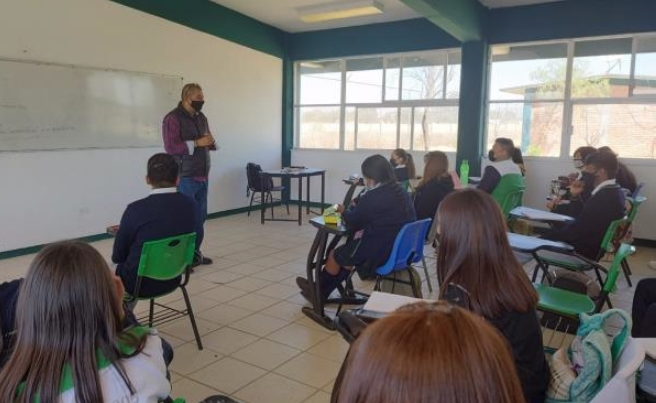
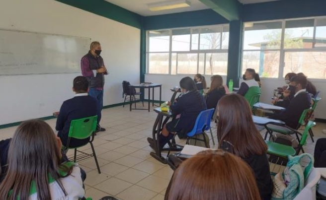

DGETAyCM Aguascalientes
regreso ordenado y seguro 2022
M.C. Héctor René Becerril Cejudo
Resumen
Hasta el momento ningún plantel de Aguascalientes opera en modo
presencial, con 100% de asistencia en horario normal. Todos los
planteles siguen alguna modalidad mixta (Presencial+Virtual+
Cuadernillos/Actividad) y en esquemas de horarios escalonados,
incrementando poco a poco la proporción presencial de acuerdo a
las condiciones de pandemia. Recordemos que todavía a inicios de
febrero de 2022, el estado de Aguascalientes era la única entidad
federativa en semáforo rojo.
El inicio de 2022 estuvo marcado por un comportamiento a la alza en la tasa de contagios de Covid-19, tal como se puede observar en la Figura 1 donde resaltan secciones de la curva de contagios con aumento en el valor de la pendiente y que se vino observando a partir del mes de diciembre de 2021, y cuyos efectos máximos se alcanzaron hacia las últimas semanas del mes de enero y las primeras semanas de febrero de 2022.

Fig 1. Covid 19 actualización 11 de marzo 2022. Fuente:
Gobierno de México, 2022.
En México se observaron los efectos de éste comportamiento sobre la mayoría de las entidades federativas, llegándose a alcanzar el nivel de semáforo rojo en Aguascalientes y anaranjado en los estados del norte y centro-norte; esto durante enero y febrero de acuerdo con los datos oficiales (Figura 2).


Fig 2. Desarrollo del semáforo de riesgo 2022. Fuente:
Gobierno de México, 2022.
La mayor cantidad de contagios reportados dentro de los trabajadores de la DGETAyCM se registraron entre mediados de enero y principios de febrero (Figura 3). Y se tuvo el deceso de una compañera docente el día 17 de febrero. Lo anterior tuvo impacto entre las comunidades escolares de los planteles en la entidad, lo que derivó en sesiones de los comités de salud para discutir las estrategias más prudentes para el arranque de las actividades.
Fig 3. Comportamiento de contagios entre trabajadores de la
DGETAyCM en Aguascalientes. El
crecimiento de la curva corresponde a lo que se observó en la Figura 1 con respecto
al comportamiento mundial de la pandemia para inicio de este año.
Actualmente, en el estado de Aguascalientes, los planteles de la DGETAyCM se encuentran operando en modalidad mixta, que refiere a distintas combinaciones de estrategias presenciales y virtuales que son adaptables en el tiempo y espacio para la construcción de un regreso paulatino a las aulas que sea ordenado y seguro (Figura 4), siguiendo siempre las recomendaciones de higiene y sana distancia. Buscando por un lado asegurar el servicio educativo de calidad, a la vez que se busca suprimir la mayor cantidad de riesgo para docentes y alumnos. Como principales parámetros para la toma de decisiones se siguen considerando las cifras oficiales de contagio y riesgo de contagio a través de su indicador más reducido y sencillo de interpretar que es el semáforo COVID-19.
Fig 4. Sesión escalonada en el CBTA No. 205 de Aguascalientes en
el que se viene trabajando en modalidad mixta (Presencial + Virtual).
En todos los planteles se mantiene operando la figura de los Comites de Participación Social de Salud integrados por miembros de las comunidades educativas de cada plantel en los que se incluye la participación de autoridades de salud locales. De esta manera, se busca darle soporte a la toma de decisiones evitando iniciativas verticales que pudieran poner en riesgo tanto a trabajadores como a los alumnos y sociedad en general que visitan nuestros planteles.
A pesar del complicado escenario que significó el primer bimestre del año en términos de pandemia, poco a poco se ha ido incrementando la actividad, de manera gradual, de acuerdo a las condiciones observadas y a los acuerdos alcanzados en las sesiones de los comités de salud.
A pesar de haber sufrido la pérdida de una de nuestras compañeras docentes a causa de la enfermedad de COVID 19, se sigue avanzando en el camino de un regreso paulatino de manera comprometida por parte de docentes y directivos de cada uno de los planteles. En días pasados sesionaron algunos comités de salud para incrementar aún más la actividad presencial, basándose en las aportaciones de autoridades locales del sector salud quienes observan condiciones favorables para que, sin abandonar las medidas de prevención, avancemos paulatinamente hacia un modo presencial.
Aguascalientes, Ags., marzo de 2022.
El inicio de 2022 estuvo marcado por un comportamiento a la alza en la tasa de contagios de Covid-19, tal como se puede observar en la Figura 1 donde resaltan secciones de la curva de contagios con aumento en el valor de la pendiente y que se vino observando a partir del mes de diciembre de 2021, y cuyos efectos máximos se alcanzaron hacia las últimas semanas del mes de enero y las primeras semanas de febrero de 2022.
En México se observaron los efectos de éste comportamiento sobre la mayoría de las entidades federativas, llegándose a alcanzar el nivel de semáforo rojo en Aguascalientes y anaranjado en los estados del norte y centro-norte; esto durante enero y febrero de acuerdo con los datos oficiales (Figura 2).
La mayor cantidad de contagios reportados dentro de los trabajadores de la DGETAyCM se registraron entre mediados de enero y principios de febrero (Figura 3). Y se tuvo el deceso de una compañera docente el día 17 de febrero. Lo anterior tuvo impacto entre las comunidades escolares de los planteles en la entidad, lo que derivó en sesiones de los comités de salud para discutir las estrategias más prudentes para el arranque de las actividades.
Actualmente, en el estado de Aguascalientes, los planteles de la DGETAyCM se encuentran operando en modalidad mixta, que refiere a distintas combinaciones de estrategias presenciales y virtuales que son adaptables en el tiempo y espacio para la construcción de un regreso paulatino a las aulas que sea ordenado y seguro (Figura 4), siguiendo siempre las recomendaciones de higiene y sana distancia. Buscando por un lado asegurar el servicio educativo de calidad, a la vez que se busca suprimir la mayor cantidad de riesgo para docentes y alumnos. Como principales parámetros para la toma de decisiones se siguen considerando las cifras oficiales de contagio y riesgo de contagio a través de su indicador más reducido y sencillo de interpretar que es el semáforo COVID-19.

En todos los planteles se mantiene operando la figura de los Comites de Participación Social de Salud integrados por miembros de las comunidades educativas de cada plantel en los que se incluye la participación de autoridades de salud locales. De esta manera, se busca darle soporte a la toma de decisiones evitando iniciativas verticales que pudieran poner en riesgo tanto a trabajadores como a los alumnos y sociedad en general que visitan nuestros planteles.
A pesar del complicado escenario que significó el primer bimestre del año en términos de pandemia, poco a poco se ha ido incrementando la actividad, de manera gradual, de acuerdo a las condiciones observadas y a los acuerdos alcanzados en las sesiones de los comités de salud.
A pesar de haber sufrido la pérdida de una de nuestras compañeras docentes a causa de la enfermedad de COVID 19, se sigue avanzando en el camino de un regreso paulatino de manera comprometida por parte de docentes y directivos de cada uno de los planteles. En días pasados sesionaron algunos comités de salud para incrementar aún más la actividad presencial, basándose en las aportaciones de autoridades locales del sector salud quienes observan condiciones favorables para que, sin abandonar las medidas de prevención, avancemos paulatinamente hacia un modo presencial.
Aguascalientes, Ags., marzo de 2022.